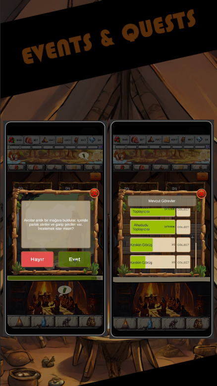
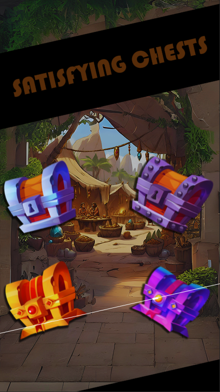
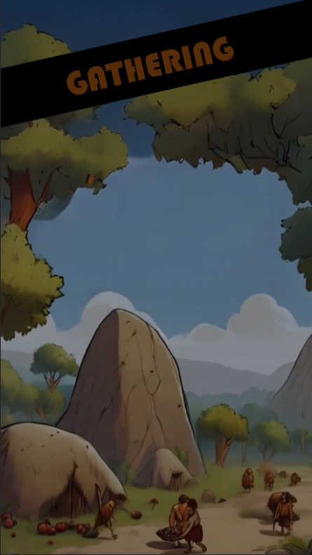
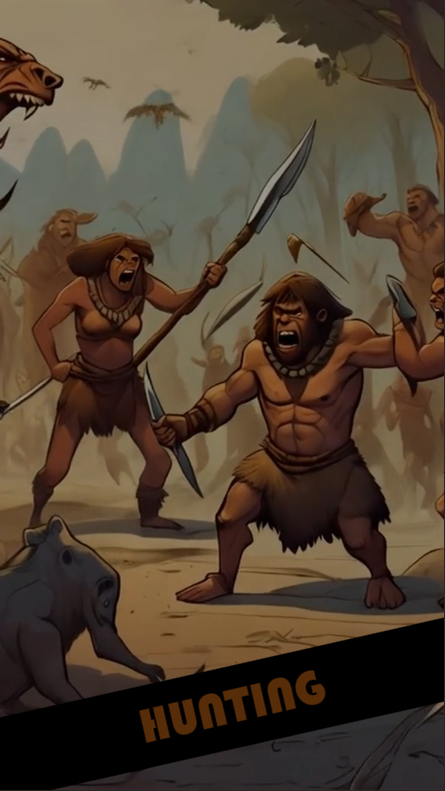
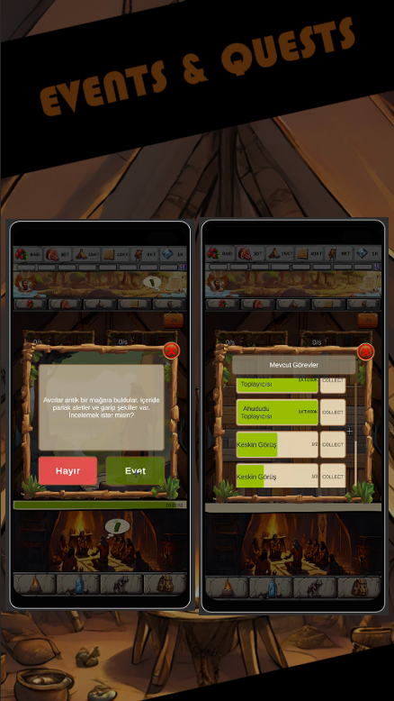
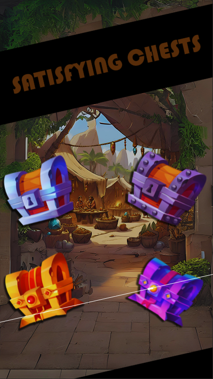
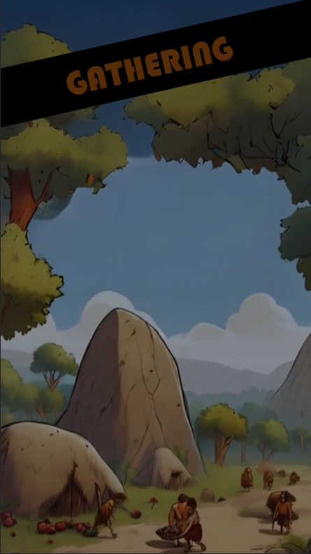
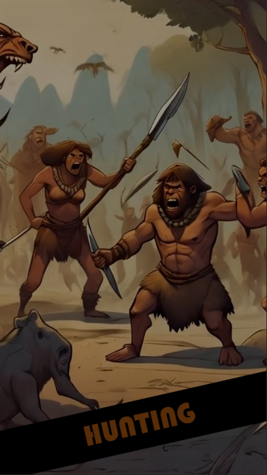

?? Lead Your Tribe & Build a Thriving Civilization! ??
Welcome to Idle Primitive Life, the ultimate idle survival and tribe-building adventure set in the prehistoric age! Step into a world of stone, fire, and early civilization. As the leader of your tribe, you will gather resources, tame wild animals, unlock hidden technologies, and overcome natural dangers to guide your people from primitive hunters to a powerful civilization.
This isn't just another idle clicker?it's a full-fledged survival simulation game mixed with strategic civilization development. Craft tools, manage your tribe, and expand your village into a sprawling prehistoric empire!
?? Key Features:
- ?? Idle Resource Management ? Collect wood, meat, stone, and fruit. Automate your tribe?s work and optimize their productivity while you focus on strategy.
- ?? Tribe Expansion ? Build shelters, farms, and workshops. Grow your small village into a thriving prehistoric city.
- ?? Tame & Train Wild Pets ? Catch ancient creatures, tame them, and unlock their unique powers to boost your tribe's efficiency and defense.
- ?? Discover Ancient Treasures ? Explore the world to find chests filled with rare rewards, powerful tools, and mystery artifacts.
- ?? Survive Natural Disasters ? Prepare your people for earthquakes, floods, wild animal attacks, and other environmental hazards.
- ?? From Stone to Society ? Witness your civilization evolve from simple survival to organized agriculture, early inventions, and cultural growth.
- ?? Crafting & Building System ? Collect materials and craft tools, weapons, and buildings crucial for survival and development.
- ? Real-Time Idle Gameplay ? Your tribe only progresses while you're in the game, making every moment count!
?? Why You'll Love Idle Primitive Life:
- ?? Perfect for fans of idle games, survival simulators, and prehistoric era themes.
- ??? Great for both casual players and those who enjoy strategic gameplay and long-term development.
- ?? Unique setting combining tribal life, ancient creatures, and early human evolution.
- ?? Offers a satisfying blend of clicker mechanics, resource planning, and base building.
?? Optimized for Discovery
We?ve carefully designed our game to appeal to players searching for:
- ?Idle tribe games?
- ?Prehistoric survival simulator?
- ?Stone age civilization builder?
- ?Offline idle strategy game?
- ?Tribe management idle RPG?
- ?Idle evolution clicker?
- ?Ancient survival adventure?
- ?Free offline games with pets?
- ?Primitive idle builder game?
- ?Tribe defense survival strategy?
?? Frequent Events & Updates
Join seasonal events, collect exclusive rewards, and unlock new features regularly. We?re always listening to player feedback to improve your experience.
?? Ready to write your tribe's story in history?
Download Idle Primitive Life now and begin your journey through the ages. Build, survive, evolve, and become the legendary founder of the greatest prehistoric civilization the world has ever seen!